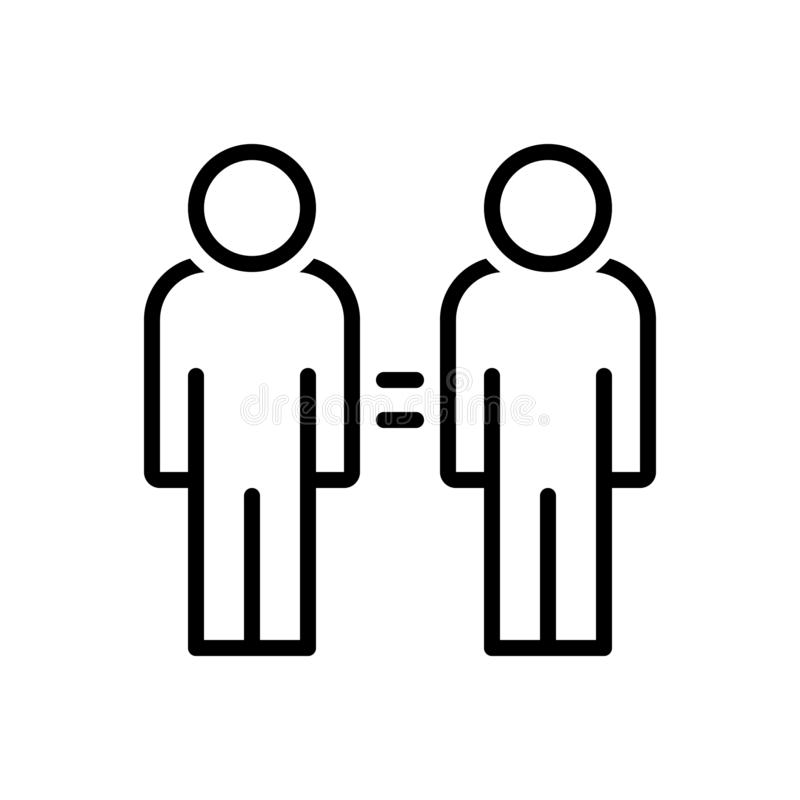

1 Bases de données
1.1 Vocabulaire
| Français | English |
|---|---|
| le confinement | the lockdown |
| un ordinateur portable | a laptop |
| 14 sur 20 | 14 out of 20 |
| s’attendre à qqch | to expect stg |
| des résultats mitigés | mixed results |
| l’opinion majoritaire | the majority opinion |
| tranché, clair | clear-cut |
| appartenir à | to belong to |
| la plupart | most |
| un tiers | a third |
| un échantillon | a sample |
| aller au travail | to commute |
| un logiciel | a software |
| être habitué à | to be used to -ING |
| épuré | streamlined |
| proche de | close to |
| prudent à l’égard de | wary of |
| se tramer | to brew |
| arrêter, entraver | to stunt |
| un outil | a tool |
| un règlement de comptes | a reckoning |
| une échelle | a scale |
| au-delà | beyond |
| interdire | to ban |
| un stigmate | a stigma |
| un événement | an event |
| organiser une soirée | to throw a party |
| bien que (a…) | although |
| bien que (e…) | even though |
| cependant (h…) | however |
| cependant (n…) | nevertheless |
| pourtant (y…) | yet |
| néanmoins | nonetheless |
| en dépit de (d…) | despite |
| en dépit de (i…) | in spite of |
| un PDG | a CEO |
| au lieu de | instead of |
| concret | hands-on |
| mettre à jour | update |
| désintoxication numérique | digital detox |
| un manuel scolaire | a textbook |
| un voyage scolaire | a field trip |
| des aiguilles à tricoter | knitting needles |
| de la boue | mud |
| désapprouver qqch | to frown on stg |
| s’empresser | to rush |
| fournir qqch à qqn | to supply sb with stg |
| se concentrer sur | to focus on |
| aller à l’encontre d’une tendance | to buck a trend |
| cautionner | to endorse |
| capacité d’attention | attention span |
| un fief | a foothold |
| un diplôme | a degree |
| paradoxal | paradoxical |
| améliorer | to improve |
| nier | to deny |
| parmi | among |
| obtenir son diplôme | to graduate |
| suffisant, arrogant | smug |
| la sagesse | wisdom |
| équivalent à | tantamount to |
| le mal | evil |
| néfaste | harmful |
| une moyenne | an average |
| enlever | to remove |
| hardi, courageux | bold |
| défendre une idée | to advocate an idea |
| dépendant à | addicted to |
| prendre en compte | to take into account |
| prendre parti | to take sides |
| promouvoir | to advertise |
| selon | according to |
| un domaine | a field |
| stable | steady |
| fuir, éviter | to shun |
| couverture médiatique | coverage |
| infortuné | hapless |
| supposer | to assume |
| sagesse | wisdom |
| affirmer | to assert |
| très éloigné de | a far cry from |
| un exemple pertinent | a case in point |
| surveiller | to monitor |
| façonner | to craft |
| engendrer | to spawn |
| confier | to vouchsafe |
| l’aube | dawn |
| citer | to quote |
| cohérent | consistent |
| étendu | wide-ranging |
| plus loin | further |
| un taux | a rate |
| confirmer,soutenir | to uphold |
| infondé | unfounded |
| un conseil | advice |
| vaincre | to overcome |
| enhardir | to embolden |
| des preuves | evidence |
| aplatir | to flatten |
| renforcer | to buttress |
| gagner de l’argent | to earn |
| sans honte | shameless |
| traiter de | to deal with |
| une entreprise | a company |
| du matériel | hardware |
| quelque peu | somewhat |
| s’abstenir de | to refrain from |
| par conséquent | therefore |
| une tendance | a trend |
| mettre en lumière | to shed light on |
| un fer-de-lance | a spearhead |
| compter sur | to rely on |
| émerger | to arise |
| un équilibre | a balance |
| étendu | wide |
| équipement pour la maison | houseware |
| disponible | available |
| assister à | to attend |
| partager | to share |
| une gamme de produits | a range |
| rendre possible | to allow for |
| le prix | pricing |
| acheter | to purchase |
| un chevalier | a knight |
| stable | steady |
| fuir, éviter | to shun |
| couverture médiatique | coverage |
| infortuné | hapless |
| suffisant, arrogant | smug |
| supposer | to assume |
| sagesse | wisdom |
| néfaste | harmful |
| affirmer | to assert |
| très éloigné de | a far cry from |
| un exemple pertinent | a case in point |
| surveiller | to monitor |
| façonner | to craft |
| engendrer | to spawn |
| confier | to vouchsafe |
| l’aube | dawn |
| citer | to quote |
| cohérent | consistent |
| étendu | wide-ranging |
| plus loin | further |
| un taux | a rate |
| confirmer,soutenir | to uphold |
| infondé | unfounded |
| un conseil | advice |
| vaincre | to overcome |
| au-delà | beyond |
| enhardir | to embolden |
| des preuves | evidence |
| aplatir | to flatten |
| renforcer | to buttress |
| gagner de l’argent | to earn |
1.2 Traductions
| Français | English |
|---|---|
| Avec qui habites-tu ? | Who do you live with? |
| Combien de temps cela te prend-il pour aller à l’École Estienne ? | How long does it take you to go to École Estienne? |
| Où habitais-tu l’année dernière ? | Where did you live last year? |
| Es-tu déjà allé(e) au Musée de la Bourse de Commerce qui a ouvert l’année dernière ? | Have you already been to the MBC which opened last year? |
| Bien que l’enseignement à distance ait des défauts, c’est toujours mieux que rien. | Although online teaching has drawbacks, it is still better than nothing. |
| Regarde ! Ils sont en train d’installer de nouveaux ordinateurs de bureau. | Look! New desktops are being installed. |
| De nombreux ordinateurs portables ont été donnés aux écoles pour améliorer l’enseignement. | Schools have been given a lot of laptops to improve teaching. |
| On peut cependant se demander dans quelle mesure cette initiative a été efficace. | However, one can wonder how efficient this initiative has been. |
| Avec qui as-tu travaillé hier? | Who did you work with yesterday? |
| Quelle question de sondage as-tu posée la semaine dernière ? | Which poll question did you ask last week? |
| À qui écris-tu un message ? | Who are you writing a message to? |
| Que devez-vous écouter pour cette leçon ? | What must you listen to for this lesson? |
| D’un côté on peut défendre l’idée que les nouvelles technologies améliorent l’enseignement. | On the one hand we can advocate the idea that new technologies improve teaching. |
| On ne peut toutefois nier que de nombreux enfants et adolescents sont devenus dépendants des écrans et des réseaux sociaux. | Yes it cannot be denied that many children and teenagers have become addicted to screens and social networks. |
| N’est-il pas paradoxal que les écrans soient interdits aux enfants d’ingénieurs? | Is it not paradoxical that engineers’ children are prohibited from using screens? |
| Si je prends en compte tous ces arguments, je suis forcé de prendre parti… | If I take all these arguments into account, I am forced to take sides… |
| Cela fait plus de dix ans que l’on parle de cette école. | The media have been speaking about this school for more than a decade. |
| On peut se demander si tout cela n’est pas un peu exagéré. | It can be wondered whether all of this has been somewhat blown out of proportion. |
| Pourquoi les ingénieurs seraient-ils compétents en-dehors de leur domaine d’expertise? | Why would engineers be competent outside their field of expertise? |
| Les écoles du centre de l’Amérique ont peut-être réduit leur utilisation des ordinateurs en cours. | Schools in Middle America may have reduced their use of computers in class. |
| Si je suis d’accord avec vous sur ce point, je souhaiterais cependant dire la chose suivante. | Even though I do agree with you on this point, however I would like to say the following. |
| Cet argument ne tient pas debout ! | This argument doesn’t have a leg to stand on! |
| Après avoir écouté les arguments de la partie adverse, je dois dire que je suis loin d’être convaincu. | After listening to the opposite side’s arguments, I must say I am not even remotely convinced. |
| Il est évident que vous mentez de façon éhontée ! | It is obvious you are lying through your teeth! |
1.3 Prononciation
| Word | Sounds | Stress | Received Pronunciation | General American |
|---|---|---|---|---|
| steady | /10/ | /’sted.i/ | /’sted.i/ | |
| assume | /01/ | /ə.’sjuːm/ | /ə.’sjuːm/ | |
| myth | /1/ | /mɪθ/ | /mɪθ/ | |
| practice | /10/ | /’prækt.ɪs/ | /’prækt.ˌɪs/ | |
| graduate | /100/ | /’grædʒ.u.ət/ | /’grædʒ.u.ət/ | |
| novel | /10/ | /’nɒv.əl/ | /’nɑːv.əl/ | |
| tantamount | /100/ | /’tænt.ə.maʊnt/ | /’tænt.ə.ˌmaʊnt/ | |
| evil | /10/ | /’iːv.əl/ | /’iːv.əl/ | |
| smug | /1/ | /smʌg/ | /smʌg/ | |
| dawn | /1/ | /dɔːn/ | /dɔːn/ | |
| safety | /10/ | /’seɪf.ti/ | /’seɪf.ti/ | |
| both | /1/ | /bəʊθ/ | /boʊθ/ | |
| hierarchy | /100/ | /’haɪər.ɑːk.i/ | hierarchy | |
| company | /100/ | /’kʌmp.ən.i/ | /’kʌmp.ən.i/ | |
| vaccine | /10/ | /’væks.iːn/ | /ˌvæks.’iːn/ | |
| wealthy | /10/ | /’welθ.i/ | /’welθ.i/ | |
| average | /100/ | /’æv.ər.ɪdʒ/ | /’æv.ər.ɪdʒ/ | |
| remove | /01/ | /ri.’muːv/ | /ri.’muːv/ | |
| vouchsafe | /01/ | /vaʊtʃ.’seɪf/ | vouchsafe | |
| culture | /10/ | /’kʌltʃ.ə/ | /’kʌltʃ.ər/ | |
| hardware | /10/ | /’hɑːd.weə/ | /’hɑːd.ˌwer/ | |
| copy | /10/ | /’kɒp.i/ | /’kɑːp.i/ | |
| however | /010/ | /haʊ.’ev.ə/ | /ˌhaʊ.’ev.ər/ | |
| rely | /01/ | /ri.’laɪ/ | /ri.’laɪ/ | |
| range | /1/ | /reɪndʒ/ | /reɪndʒ/ | |
| furniture | /100/ | /’fɜːn.ɪtʃ.ə/ | /’f3r ːn.ɪtʃ.ər/ | |
| study | /10/ | /’stʌd.i/ | /’stʌd.i/ | |
| purchase | /10/ | /’pɜːtʃ.əs/ | /’p3r ːtʃ.əs/ |
1.4 Échéances
| 17/09/2021 | Préparer le rapport oral du sondage de début d’année, pour les équipes qui ne sont pas passées. |
| 23/09/2021 | Prepare a reaction to the article “A dark consensus“ |
1.5 Flashcards
| Images | Expressions |
|---|---|
| a buttress | |
| a desktop | |
| a laptop | |
| a root | |
| a smug anime | |
| a stream | |
| arms open wide | |
| artpix | |

|
dawn |
|  | tantamount to |
| to fit into | |
| to found | |
| wealthy |